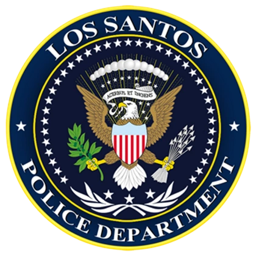

 Law Enforcement Helper
Тип сцены:
-- Выберите --
о стрельбе
об ограблении
об ограблении магазина
об угоне транспорта
о ДТП
о похищении
о трупе
об убийстве
о драке
о краже
о краже деталей
Расследует:
-- Выберите --
Офицер LSPD
Помощник шерифа BCSO
Инвестигейтор BCSO
Детектив LSPD
Место происшествия
Свидетели
Камеры
Стрельба
Транспорт и обувь
Улики
Сейф и касса
Труп
Похищение
Раненный NPC
Сгенерировать
Очистить
Скопировать